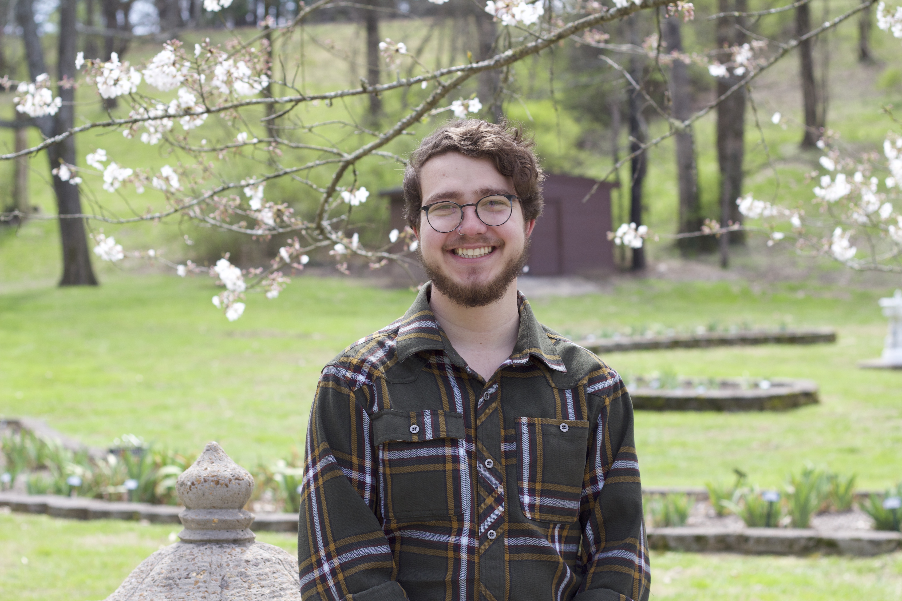
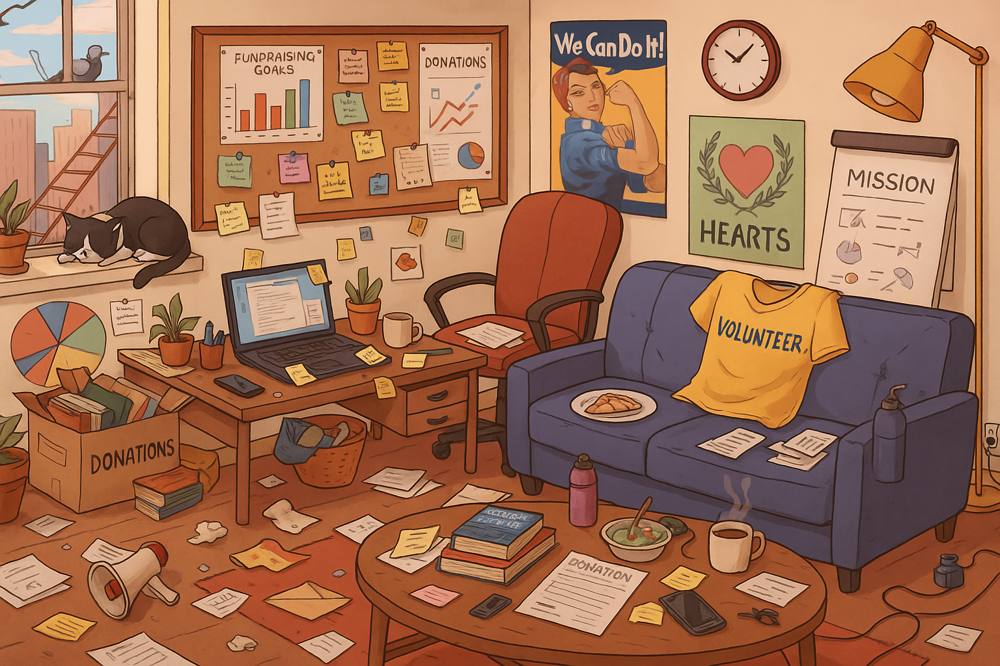

Working Notes
A small collection of observations and analyses about the non-profit and education sector from the perspective of a direct service provider.
College Connection Mentor & Philosophy Researcher — Nashville, TN
Interests
Post-secondary education access, social and political philosophy, community development, continental philosophy, psychology and cognition

I am currently a College Connection Mentor at the Oasis Center in Nashville, where I work with high school students in Metro Nashville Public Schools as they make the transition from high school to college and other post-secondary opportunities. I specialize in supporting first-generation, low-income, and new American students, and I have an extensive background working with students who are traditionally underrepresented in higher education. I provide assistance with college and career exploration, applications, financial aid, and enrollment.
I earned my B.S. in Philosophy (Highest Honors) and Cognitive Studies at Vanderbilt and later studied Modern and Contemporary European Philosophy at the University of Luxembourg as a Guillaume Dupaix International Master's Scholar. My academic research focuses on continental philosophy, ethics, and social and political philosophy. I also dabble in ancient philosophy, psychology, and media studies.
I am now expanding my work to teaching and multi-modal research on education and community development. I am always open to discussing direct service work, education reform, and academic research.

A small collection of observations and analyses about the non-profit and education sector from the perspective of a direct service provider.
Philosophical reflections on academic materials and occasional miscellany.
A resource hub meant to provide clarity for professionals and academics at any stage of their career.